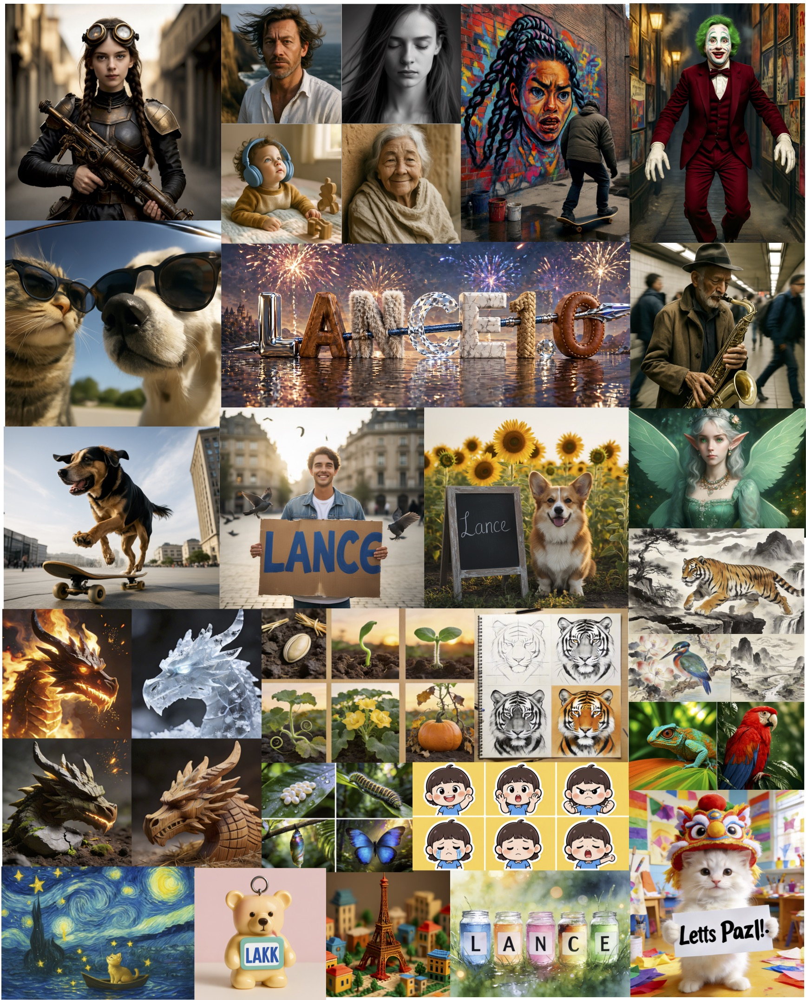
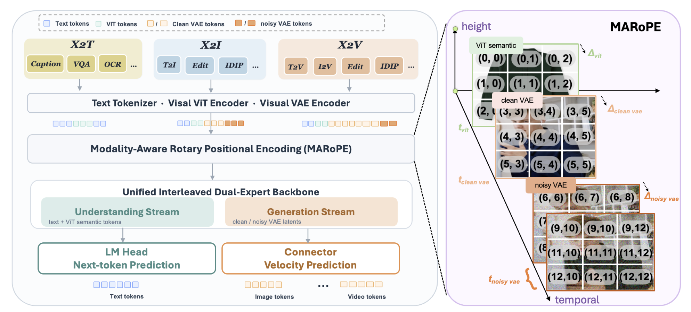

Dreamlike animal motion
Lance is a lightweight native unified multimodal model for image and video understanding, generation, and editing, trained from scratch with a staged multi-task recipe.
Lance bridges image/video understanding, generation, and editing in one compact native unified multimodal model.
Representative text-conditioned generations spanning character, animal, portrait, and atmospheric motion.
Prompt-driven edits that preserve scene layout while changing subjects, materials, backgrounds, or appearance details.
Structured planning and physics-oriented examples that probe control over multi-step spatial behavior.
Representative text-to-image outputs spanning photorealistic, stylized, compositional, and typography-heavy prompts.

Shared tokenization, modality-aware positions, and a dual-expert backbone support understanding and generation within one unified training recipe.

Best overall score among listed unified multimodal models.
Top total score in the unified model group.
Strong generation results within a compact model budget.
Comparisons against generation-only models and unified multimodal baselines.
Scroll horizontally to inspect all metrics.
| Method | # Params. | Single Obj. | Two Obj. | Counting | Colors | Position | Color Attri. | Overall |
|---|---|---|---|---|---|---|---|---|
| Generation-only models | ||||||||
| FLUX.1-dev | 12B | 0.98 | 0.93 | 0.75 | 0.93 | 0.68 | 0.65 | 0.82 |
| GPT Image 1 | - | 0.99 | 0.92 | 0.85 | 0.92 | 0.75 | 0.61 | 0.84 |
| Qwen-Image | 20B | 0.99 | 0.92 | 0.89 | 0.88 | 0.76 | 0.77 | 0.87 |
| Unified models | ||||||||
| MetaQuery-XL† | 7B | - | - | - | - | - | - | 0.80 |
| OmniGen2 | 4B | 1.00 | 0.95 | 0.64 | 0.88 | 0.55 | 0.76 | 0.80 |
| Show-o2 | 7B | 1.00 | 0.87 | 0.58 | 0.92 | 0.52 | 0.62 | 0.76 |
| UniWorld-V1 | 13B | 0.99 | 0.93 | 0.79 | 0.89 | 0.49 | 0.70 | 0.80 |
| BAGEL† | 7B | 0.98 | 0.95 | 0.84 | 0.95 | 0.78 | 0.77 | 0.88 |
| Mogao | 7B | 1.00 | 0.97 | 0.83 | 0.93 | 0.84 | 0.80 | 0.89 |
| TUNA | 7B | 1.00 | 0.97 | 0.81 | 0.91 | 0.88 | 0.83 | 0.90 |
| Lance | 3B | 0.99 | 0.96 | 0.83 | 0.95 | 0.89 | 0.82 | 0.91 |
Scroll horizontally to inspect all metrics.
| Method | # Params. | Global | Entity | Attribute | Relation | Other | Overall |
|---|---|---|---|---|---|---|---|
| Generation-only models | |||||||
| PixArt-a | 0.6B | 74.97 | 79.32 | 78.60 | 82.57 | 76.96 | 71.11 |
| SDXL | 3.5B | 83.27 | 82.43 | 80.91 | 86.76 | 80.41 | 74.65 |
| Hunyuan-DiT | 1.5B | 84.59 | 80.59 | 88.01 | 74.36 | 86.41 | 78.87 |
| Playground v2.5 | - | 83.06 | 82.59 | 81.20 | 84.08 | 83.50 | 75.47 |
| DALL-E 3 | - | 90.97 | 89.61 | 88.39 | 90.58 | 89.83 | 83.50 |
| SD3-Medium | 2B | 87.90 | 91.01 | 88.83 | 80.70 | 88.68 | 84.08 |
| Emu3-Gen | 8B | 85.21 | 86.68 | 86.84 | 90.22 | 83.15 | 80.60 |
| FLUX.1-dev | 12B | 74.35 | 90.00 | 88.96 | 90.87 | 88.33 | 83.84 |
| Qwen-Image | 20B | 91.32 | 91.56 | 92.02 | 94.31 | 92.73 | 88.32 |
| Unified models | |||||||
| Emu3-DPO | 8B | - | - | - | - | - | 81.60 |
| Janus | - | 82.33 | 87.38 | 87.70 | 85.46 | 86.41 | 79.68 |
| Janus-Pro-7B | 7B | 86.90 | 88.90 | 89.40 | 89.32 | 89.48 | 84.19 |
| Ovis-U1 | 1.2B | 82.37 | 90.08 | 88.68 | 93.35 | 85.20 | 83.72 |
| OmniGen2 | 4B | 88.81 | 88.83 | 90.18 | 89.37 | 90.27 | 83.57 |
| Show-o2 | 7B | 89.00 | 91.78 | 89.96 | 91.81 | 91.64 | 86.14 |
| UniWorld-V1 | 13B | 83.64 | 88.39 | 88.44 | 89.27 | 87.22 | 81.38 |
| BAGEL† | 7B | 88.94 | 90.37 | 91.29 | 90.82 | 88.67 | 85.07 |
| Mogao | 7B | 82.37 | 90.03 | 88.26 | 93.18 | 85.40 | 84.33 |
| InternVL-U | 1.7B | 90.39 | 90.78 | 90.68 | 90.29 | 88.77 | 85.18 |
| TUNA | 7B | 90.42 | 91.68 | 90.94 | 91.87 | 90.73 | 86.76 |
| Lance | 3B | 83.89 | 90.68 | 88.68 | 92.77 | 80.00 | 84.43 |
Scroll horizontally to inspect all metrics.
| Method | # Params. | BC | CA | MM | MC | PB | ST | SA | SR | SRp | TM | TT | Avg/G-O |
|---|---|---|---|---|---|---|---|---|---|---|---|---|---|
| Generation-only models | |||||||||||||
| Gemini 2.0 | - | - | - | - | - | - | - | - | - | - | - | - | 6.32 |
| GPT Image 1 | - | 6.96 | 6.85 | 7.10 | 5.41 | 6.74 | 7.44 | 7.51 | 8.73 | 8.55 | 8.45 | 8.69 | 7.49 |
| Qwen-Image-Edit | 20B | 8.23 | 8.30 | 7.33 | 8.05 | 7.49 | 6.74 | 8.57 | 8.09 | 8.29 | 8.48 | 8.50 | 8.01 |
| Unified models | |||||||||||||
| Lumina-DiMOO | 8B | 3.43 | 4.27 | 3.08 | 2.77 | 4.74 | 5.19 | 4.44 | 3.80 | 4.38 | 2.68 | 4.20 | 3.91 |
| Ovis-U1 | 1.2B | 7.49 | 6.88 | 6.21 | 4.79 | 5.98 | 6.46 | 7.49 | 7.25 | 7.27 | 4.48 | 6.31 | 6.42 |
| BAGEL | 7B | 7.32 | 6.91 | 6.38 | 4.75 | 4.57 | 6.15 | 7.90 | 7.16 | 7.02 | 7.32 | 6.22 | 6.52 |
| InternVL-U | 1.7B | 7.08 | 7.05 | 6.38 | 7.02 | 6.03 | 6.27 | 7.13 | 6.55 | 6.33 | 6.59 | 6.85 | 6.66 |
| InternVL-U (w/ CoT) | 1.7B | 7.05 | 7.87 | 6.50 | 6.99 | 5.77 | 6.10 | 7.33 | 7.16 | 7.12 | 7.36 | 6.46 | 6.88 |
| Lance | 3B | 7.82 | 7.76 | 7.16 | 7.50 | 7.20 | 7.15 | 7.68 | 7.79 | 7.44 | 3.70 | 7.83 | 7.18 |
Scroll horizontally to inspect all metrics.
| Model | # Params. | Total Score |
|---|---|---|
| Generation-only models | ||
| ModelScope | 1.7B | 75.75 |
| LaVie | 3B | 77.08 |
| Show-1 | 6B | 78.93 |
| AnimateDiff-V2 | - | 80.27 |
| VideoCrafter-2.0 | - | 80.44 |
| CogVideoX | 5B | 81.61 |
| Kling | - | 81.85 |
| Open-Sora-2.0 | - | 81.71 |
| Gen-3 | - | 82.32 |
| Step-Video-T2V | 30B | 81.83 |
| Hunyuan Video | - | 83.43 |
| Wan2.1-T2V | 14B | 83.69 |
| Unified models | ||
| HaproOmni | 7B | 78.10 |
| Emu3 | 8B | 80.96 |
| VILA-U | 7B | 74.01 |
| Show-o2 | 2B | 81.34 |
| TUNA | 1.5B | 84.06 |
| Lance | 3B | 84.17 |
@article{lance,
title={Lance: A Compact Unified Multimodal Model via Multi-Task Synergy},
author={Fengyi Fu and Mengqi Huang and Shaojin Wu and Yunsheng Jiang and Yufei Huo and Jianzhu Guo and Hao Li and Yinghang Song and Fei Ding and Qian He and Zheren Fu and Zhendong Mao and Yongdong Zhang},
journal={placeholder},
year={2026}
}